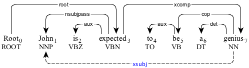

xsubj : open clausal subject
An open clausal subject (xsubj) is the subject in an open clausal complement that is governed externally.
In the following example, "John" is the subject of "had" as well as "buy" and "teach" in the infinitive clauses.

The open clausal subject in the infinitive clauses.
The xsubj relation can indicate the subject in a passive construction as well.

The open clausal complement modifying the passive construction.
The open clausal complement modifying the passive construction.